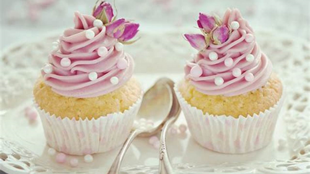
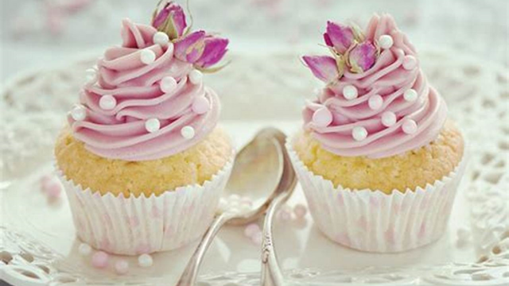

The main goal for this project is to advertise the client's bakery in order to increase the sales of the products as well as get more customers by signing up the weekly specials.
As the client want to increase their sale, and by looking at their request form, developing a web as he described won't be problem. Making the web according to the client's detail will not be having a doubt to have a successful website and getting more customers
The target audience is for every ages, especially the young and old ones, 17-35.

We are a small family-run local business, operating in Kirwan since 2012, hoping to improve our business by getting on the Internet. Our bakery is located at 123 Prize Lane in Kirwan, Queensland. We specialise in traditional Australian baked goods. We are currently in the process of getting some images created, so please just choose some ones for placeholders at the moment so we can see what it will look like. We have customers of all ages, however, we would like to attract young families and young people, possibly around the age of 17 – 35, to our bakery. From what we saw from other websites, we think we probably need 7 – 8 pages for our site with the following:
Navigation – Should use a horizontal navigation at the top. Links should be repeated in the footer.
Home page – should be very appealing and drive interest in our bakery. We also want to show some sample images of the products to be displayed to attract the site visitors’ attention. o We want our customers to be able to sign up for weekly specials! We think there should be a page for our weekly specials to further attract customers. o The home page should highlight these two customers comments: “Petite Treats has the best cheesecake I’ve ever had. Always fresh, and melts in the mouth. Would recommend highly!” “I’m addicted to the Danish pastries and always drop in here on my way to work.”
About me – bragging on our new bakery, great location near Willows Shopping Centre. Our baker is an artisan-baker and was trained in Paris. Some of our current customers are James Cook University, the Cowboys and Telstra.
Specials page This will have 3-4 items on special (25% off, in-store only, you pick the items!) Page should show pictures of the items and sales price
Footer information: o Contacts: 0455 5555 555 o Catering: 0433 3333 333 o Address: 123 Prize Lane, Kirwan, QLD


 



"Trebuchet MS", "Helvetica", Arial, Helvetica, sans-serif
These are the colors I'll be using on the web.
#7ad9ff
black
red
#ffdaf4
#f44336
#green
rgb(127, 236, 173)
#bdae99
#474e5d
#888
#f1f1f1

What is your first impression of the website?
For the first impression of the website, I asked 3 of my friends to view my website so I could get feedbacks and the feedbacks were mostly positive. All of them said it looked really good comparing to theirs. But they also commented that I lack some detail designs, like signup form. And yet, the website looks good.
To tackle this problem, I will make sure that I will try to improve on some details.
I asked three of my friends and the feedbacks were quite satisfying. Only one of them did respond an error that every individual menu lacks some designs and colors. And the rest respond no error at all.
For that problem, I did put a background image as blur but it turned out the image never appears. For me, it look quite good with or without the background image. That's why I did not try to fix it.
My feedbacks said that the website was quite simple and easy to use. And the colors and photos do match with the website.
One of them said he will not be visiting this site again since he is not a foodie guy. And the other two even said my website even made them hugry.
Well, yes they said. The big one from the home page as well as some big size photos like the ones on the banners took like 3 to 4 seconds to upload.
For this problem, I will be using normal size photos instaed of a big image taking most of the space.
All of the feedbacks said that the website was really easy to remember as it is simple and clear to use.
The feedbacks suggest for lack of some colors and design in detail areas. It didn't seem quite much at the first glance. But it does look the website uglier. And about the signup form, I will try to improve on it.